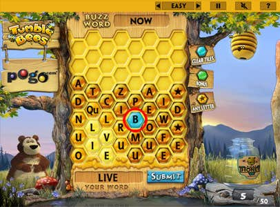
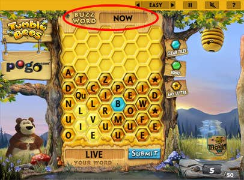

| Clearing Tiles & Buzz Words |
 |
||
Use a blue tile in a word to clear other tiles. Use two blue tiles in the same word to clear a lot of tiles. When clearing tiles, the game tries to avoid letters in the Buzz Word, wildcards, and other blue tiles. Blue tiles only appear when the board is mostly full, and after some time has passed since the last Blue tile. When clearing tiles, if you clear green tiles (bonus tiles), you will earn the bonus for them! |
||
| Buzz Word | ||
 |
||
The Buzz Word changes each game, and whenever you spell it. If you spell the Buzz Word, you will earn 10 extra honey, and all the tiles on the board will change to green bonus tiles! This is a great way to make quick progress, but it takes a lot of planning to spell the Buzz Word. |